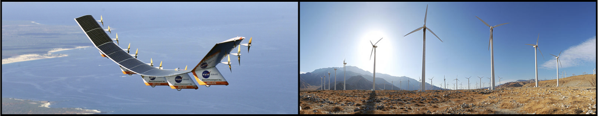

Welcome
The FLOW Lab is a research laboratory in Brigham Young University’s Mechanical Engineering Department. FLOW stands for our three focus areas: FLight, Optimization, and Wind. FLOW also represents the aerodynamic flows that are prevalent in our applications.
Our research laboratory specializes in multidisciplinary design optimization, aerodynamics, wind energy, aircraft design, aero/structural modeling, and computational methods. Current and past research projects include multidisciplinary aircraft optimization, high fidelity aeroelastic wing design, wind farm layout optimization and uncertainty quantification, wind turbine aero/structural design, vertical-axis wind turbine wake modeling, aircraft formation flight analysis and wake modeling, multifidelity optimization, and tailless aircraft design.
News
2017
- The FLOW Lab welcomes new MS students Jenna Newcomb, Teagan Nakamoto, and Nicholas Baker starting Fall semester.
- Congratulations to Taylor for receiving a Utah NASA Space Grant Consortium fellowship!
- The FLOW Lab welcomes new PhD student Eduardo Alvarez starting Spring term. He is interested in the aerodynamics and design of electric aircraft and high altitude wind devices.
- PJ visited Copper Hills High School over a period of two days to teach 500 high school physics students about the basics of wind energy.
- PJ, Taylor, and Judd all successfully passed their PhD Qualifying exams!
- PJ was selected to represent the Mechanical Engineering graduate program at the BYU grad expo. See his poster here.
- Eric successfully defended his MS Thesis, “The Development of a Vertical-Axis Wind Turbine Wake Model for Use in Wind Farm Layout Optimization with Noise Level Constraints,” and has accepted a job as Systems Engineer at Honeywell Aerospace in Torrance, CA. Check out this short video summarizing his work.
- Dr. Ning received the 2016 Mechanical Engineering Department Outstanding Research Award.
Older News …